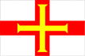
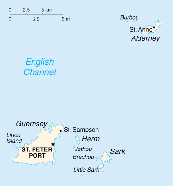

{kind=link}


| Guernsey |
 |
|
|  | |
| Introduction |
Background: The island of Guernsey and the other Channel Islands represent the last remnants of the medieval Dukedom of Normandy, which held sway in both France and England. The islands were the only British soil occupied by German troops in World War II.
| Geography |
Location: Western Europe, islands in the English Channel, northwest of France
Geographic coordinates: 49 28 N, 2 35 W
Map references: Europe
Area:
total:
194 sq km
land:
194 sq km
water:
0 sq km
note:
includes Alderney, Guernsey, Herm, Sark, and some other smaller islands
Area - comparative: slightly larger than Washington, DC
Land boundaries: 0 km
Coastline: 50 km
Maritime claims:
exclusive fishing zone:
12 nm
territorial sea:
3 nm
Climate: temperate with mild winters and cool summers; about 50% of days are overcast
Terrain: mostly level with low hills in southwest
Elevation extremes:
lowest point:
Atlantic Ocean 0 m
highest point:
unnamed location on Sark 114 m
Natural resources: cropland
Land use:
arable land:
NA%
permanent crops:
NA%
permanent pastures:
NA%
forests and woodland:
NA%
other:
NA%
Irrigated land: NA sq km
Natural hazards: NA
Environment - current issues: NA
Geography - note: large, deepwater harbor at Saint Peter Port
| People |
Population: 64,080 (July 2000 est.)
Age structure:
0-14 years:
16% (male 5,302; female 5,167)
15-64 years:
67% (male 21,171; female 21,523)
65 years and over:
17% (male 4,480; female 6,437) (2000 est.)
Population growth rate: 0.42% (2000 est.)
Birth rate: 10.17 births/1,000 population (2000 est.)
Death rate: 9.85 deaths/1,000 population (2000 est.)
Net migration rate: 3.9 migrant(s)/1,000 population (2000 est.)
Sex ratio:
at birth:
1.04 male(s)/female
under 15 years:
1.03 male(s)/female
15-64 years:
0.98 male(s)/female
65 years and over:
0.7 male(s)/female
total population:
0.93 male(s)/female (2000 est.)
Infant mortality rate: 5.07 deaths/1,000 live births (2000 est.)
Life expectancy at birth:
total population:
79.65 years
male:
76.65 years
female:
82.75 years (2000 est.)
Total fertility rate: 1.35 children born/woman (2000 est.)
Nationality:
noun:
Channel Islander(s)
adjective:
Channel Islander
Ethnic groups: UK and Norman-French descent
Religions: Anglican, Roman Catholic, Presbyterian, Baptist, Congregational, Methodist
Languages: English, French, Norman-French dialect spoken in country districts
Literacy:
definition:
NA
total population:
NA%
male:
NA%
female:
NA%
| Government |
Country name:
conventional long form:
Bailiwick of Guernsey
conventional short form:
Guernsey
Data code: GK
Dependency status: British crown dependency
Government type: NA
Capital: Saint Peter Port
Administrative divisions: none (British crown dependency)
Independence: none (British crown dependency)
National holiday: Liberation Day, 9 May (1945)
Constitution: unwritten; partly statutes, partly common law and practice
Legal system: English law and local statute; justice is administered by the Royal Court
Suffrage: 18 years of age; universal
Executive branch:
chief of state:
Queen ELIZABETH II (since 6 February 1952)
head of government:
Lieutenant Governor Sir John COWARD (since NA 1994) and Bailiff De Vic G. CAREY (since NA)
cabinet:
Advisory and Finance Committee appointed by the Assembly of the States
elections:
none; the monarch is hereditary; lieutenant governor appointed by the monarch; bailiff appointed by the monarch
Legislative branch:
unicameral Assembly of the States (59 voting members - 12 councilors serving six-year terms, half elected every three years; 33 deputies elected from multi- or single-member districts every four years; 10 representatives from parish authorities; 2 representatives from Aldenay; the bailiff and deputy bailiff; and 2 non-voting members - the Attorney General and the Solicitor General both appointed by the monarch
elections:
last held 20 April 1994 (next to be held NA 2000)
election results:
percent of vote - NA; seats - all independents
Judicial branch: Royal Court
Political parties and leaders: none; all independents
International organization participation: none
Diplomatic representation in the US: none (British crown dependency)
Diplomatic representation from the US: none (British crown dependency)
Flag description: white with the red cross of Saint George (patron saint of England) extending to the edges of the flag and a yellow equal-armed cross of William the Conqueror superimposed on the Saint George cross
| Economy |
Economy - overview: Financial services - banking, fund management, insurance, etc. - account for about 55% of total income in this tiny Channel Island economy. Tourism, manufacturing, and horticulture, mainly tomatoes and cut flowers, have been declining. Light tax and death duties make Guernsey a popular tax haven. The evolving economic integration of the EU nations is changing the rules of the game under which Guernsey operates.
GDP: purchasing power parity - $1.15 billion (1997 est.)
GDP - real growth rate: 2.3% (1997 est.)
GDP - per capita: purchasing power parity - $18,100 (1997 est.)
GDP - composition by sector:
agriculture:
4%
industry:
10%
services:
86% (1999 est.)
Population below poverty line: NA%
Household income or consumption by percentage share:
lowest 10%:
NA%
highest 10%:
NA%
Inflation rate (consumer prices): 4.7% (1997 est.)
Labor force: NA
Unemployment rate: 0.5% (1997 est.)
Budget:
revenues:
$300.8 million
expenditures:
$298.1 million, including capital expenditures of $NA (1998 est.)
Industries: tourism, banking
Industrial production growth rate: NA%
Electricity - production: NA kWh
Electricity - production by source:
fossil fuel:
NA%
hydro:
NA%
nuclear:
NA%
other:
NA%
Electricity - consumption: NA kWh
Electricity - exports: NA kWh
Electricity - imports: NA kWh
Agriculture - products: tomatoes, greenhouse flowers, sweet peppers, eggplant, fruit; Guernsey cattle
Exports: $NA
Exports - commodities: tomatoes, flowers and ferns, sweet peppers, eggplant, other vegetables
Exports - partners: UK (regarded as internal trade)
Imports: $NA
Imports - commodities: coal, gasoline, oil, machinery and equipment
Imports - partners: UK (regarded as internal trade)
Debt - external: $NA
Economic aid - recipient: $NA
Currency: 1 Guernsey pound = 100 pence
Exchange rates: Guernsey pounds per US$1 - 0.6092 (January 2000), 0.6180 (1999), 0.6037 (1998), 0.6106 (1997), 0.6403 (1996), 0.6335 (1995); note - the Guernsey pound is at par with the British pound
Fiscal year: calendar year
| Communications |
Telephones - main lines in use: 41,850 (1983)
Telephones - mobile cellular: NA
Telephone system:
domestic:
NA
international:
1 submarine cable
Radio broadcast stations: AM 1, FM 1, shortwave 0 (1998)
Radios: NA
Television broadcast stations: 1 (1997)
Televisions: NA
Internet Service Providers (ISPs): NA
| Transportation |
Railways: 0 km
Highways:
total:
NA km
paved:
NA km
unpaved:
NA km
Ports and harbors: Saint Peter Port, Saint Sampson
Merchant marine: none (1999 est.)
Airports: 2 (1999 est.)
Airports - with paved runways:
total:
2
914 to 1,523 m:
1
under 914 m:
1 (1999 est.)
| Military |
Military - note: defense is the responsibility of the UK
| Transnational Issues |
Disputes - international: none